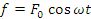
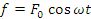
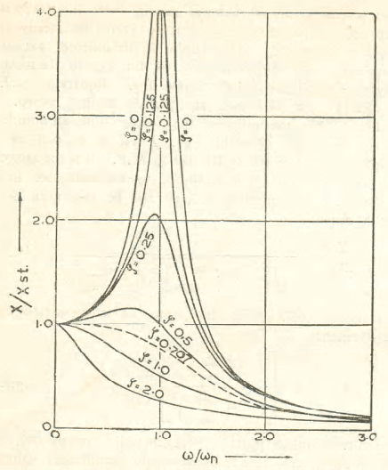
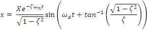

Mechanical Engineering →Vibration and Acoustics →List Of Experiments
Free response of SDOF
Aim
To find damping coefficient and damped and undamped natural frequencies of an under-damped single degree of freedom system from its response to an initial displacement
(b) Importance of knowing vibration damping coefficient, and damped and undamped natural frequencies of a vibratory system
A machine resting on a resilient pad or sheet may be modeled as a spring-mass-damper arrangement. The machine, say a lathe-bed and its accessories, can be considered rigid representing the mass M kg with motion only in vertical direction. The resilient pad can be considered to be a spring and a damper together. Let the spring constant of the pad be K N/m and its coefficient of damping C N.s/m. Since there is only one mass and only one probable motion (motion in vertical direction) the system is a single degree of freedom system. The damping will be assumed to be viscous, i.e. the resistance to motion is proportional to the velocity of mass of the system.
Let this type of single degree of freedom system be acted upon by a harmonic force; i.e. the value of a force varies with respect to time following the equation  or  . When the frequency of such harmonic force acting on the system equals the natural frequency of the system, the amplitude of motion of the mass of the system is large and resonance is said to occur. Amplitude of forced vibration tends to be large when the difference between the frequency of the harmonic force acting on the vibratory system and the natural frequency of the system is small.
or  . When the frequency of such harmonic force acting on the system equals the natural frequency of the system, the amplitude of motion of the mass of the system is large and resonance is said to occur. Amplitude of forced vibration tends to be large when the difference between the frequency of the harmonic force acting on the vibratory system and the natural frequency of the system is small.
Value of amplitude at and near resonance depends on amount of damping present in the system; the damping factor is a measure of the amount of damping. Variation of amplitude of vibration of a single degree of freedom system and frequency of the harmonic force acting on the system, for various values of damping factor, is shown in fig.1, plotted as X/Xst versus  ; X is amplitude of displacement; Xst is the displacement of mass under action of static force F0 , amplitude of the harmonic force
; X is amplitude of displacement; Xst is the displacement of mass under action of static force F0 , amplitude of the harmonic force  ; is frequency of the harmonic force; and
; is frequency of the harmonic force; and  is the undamped natural frequency of the system. The ratio X/Xst is called Magnification Factor (MF).
is the undamped natural frequency of the system. The ratio X/Xst is called Magnification Factor (MF).

Fig. 1. Plot X/Xst versus for different values of damping of factor  for different values of damping of factor.
for different values of damping of factor.
Large amplitude of forced vibration at and near resonance can be dangerous to the system because it may lead to failure of its components and joints. In order to have small amplitude of vibration of a system excited harmonically, either the difference between the natural frequency of the system and the excitation frequency must be large or the damping factor for the system must be sufficiently high. So we must know the natural frequency of the system and the damping factor to predict the amplitude of vibration when a harmonic force acts on the system. This experiment demonstrates a method to find these parameters from natural vibration of the system.
A system consisting of a spring, a mass and a damper is considered for the purpose. An initial displacement X is given to the mass; No initial velocity is given. Displacement of the mass with respect to time is recorded. A typical plot of such a record is as shown in fig. 2 and is given by the equation  .  is damped natural frequency given by
is damped natural frequency given by  ;
;  is the damping factor which is ratio of damping coefficient C to critical damping coefficient Cc. Critical damping coefficient
is the damping factor which is ratio of damping coefficient C to critical damping coefficient Cc. Critical damping coefficient  . K is stiffness constant of the spring used in the system and M is the mass.
. K is stiffness constant of the spring used in the system and M is the mass.

Fig. 2. Plots of displacement ‘x’ versus time ‘t’ for two values of damping factor,  . Initial displacement, X0, as well as undamped natural frequency of vibration, fn, are taken as 1.
. Initial displacement, X0, as well as undamped natural frequency of vibration, fn, are taken as 1.
Observe that the amplitude reduces exponentially with respect to time;
Amplitude =  .
.
The natural logarithm (logarithm to the base e) of the ratio of amplitudes of two successive cycles is constant which is known as logarithmic decrement, denoted by δ;